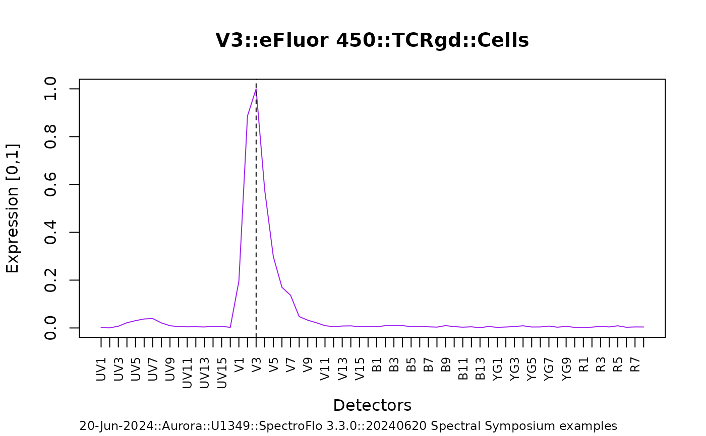
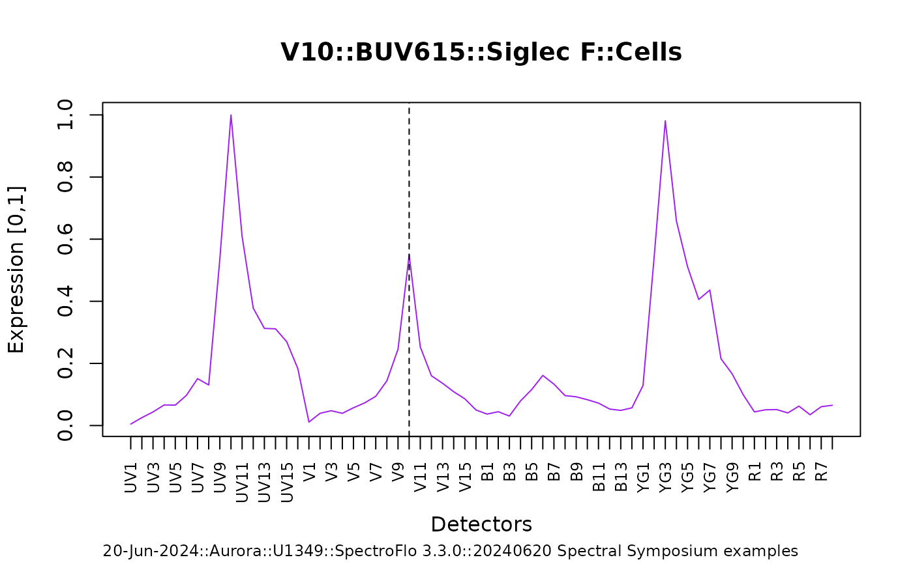
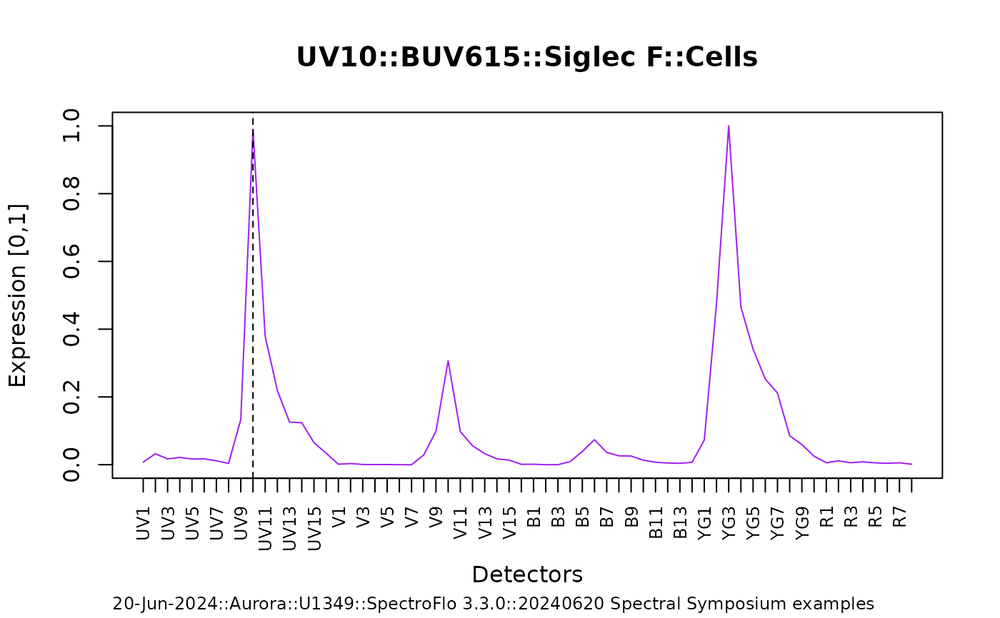
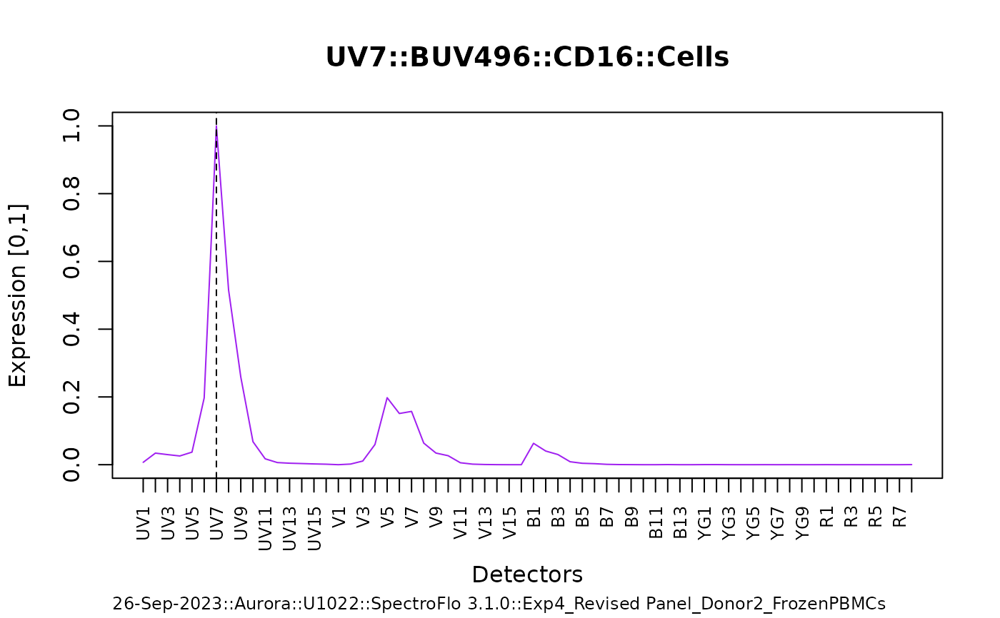
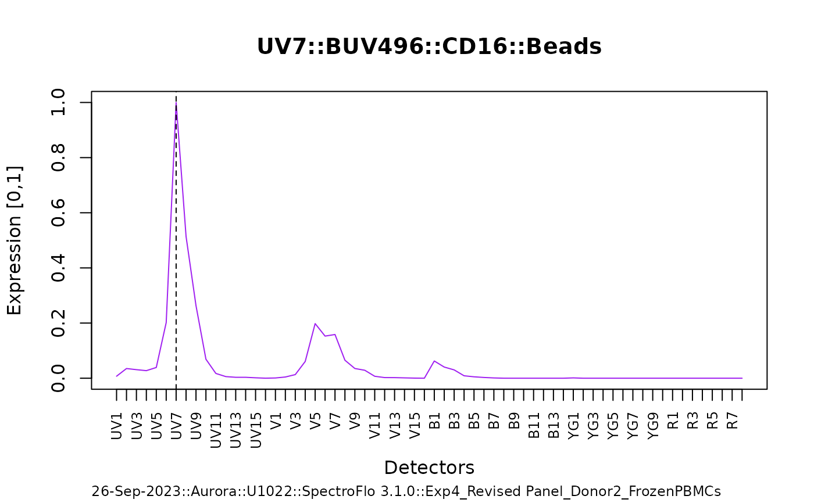
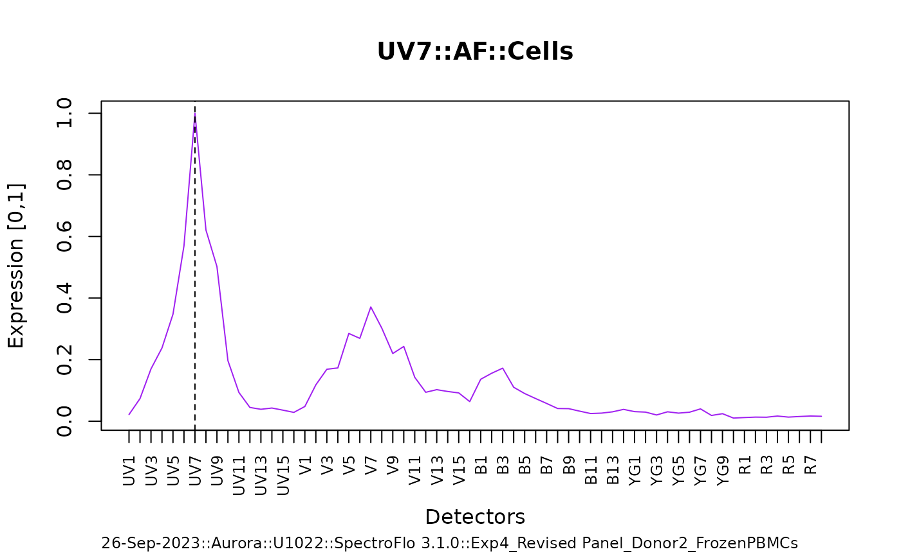
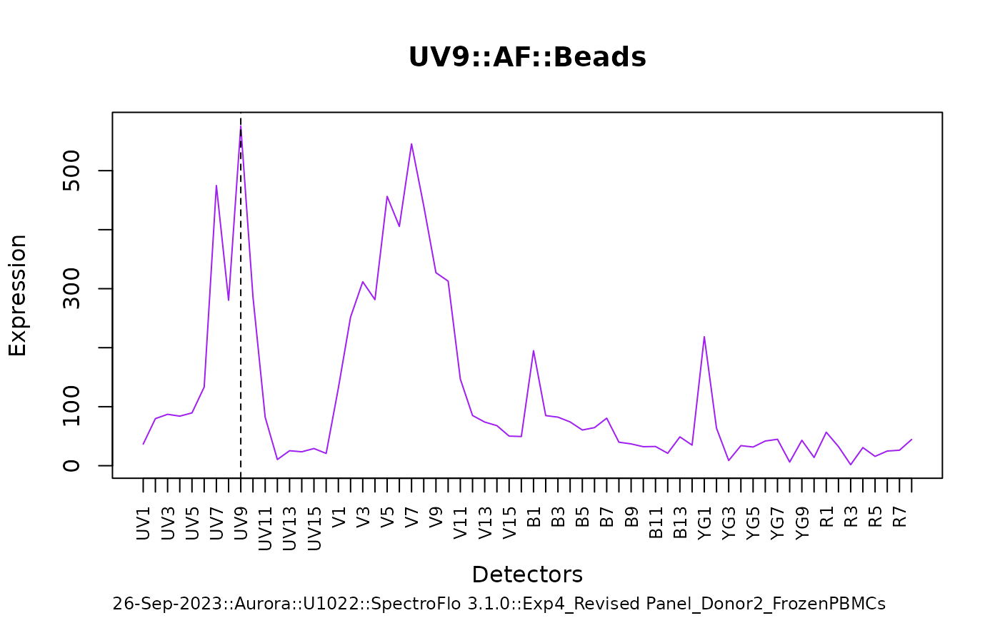

Manufacturer::Cytometer::Software tested:
Cytek::Aurora(5L)::SpectroFlo 3.3.0
As a fully data-driven/automated process – for best performance – spectracle relies on adherence to established naming conventions for appropriate identification of the unstained control, parsing of keyword-value pairs into factored metadata, and accurate annotation of derived spectra.
Usage
spectracle(
raw.reference.controls,
filter.top.expressing = NULL,
top.expressing.override = NULL,
print.timings = FALSE,
...
)Arguments
- raw.reference.controls
a character vector of full directory/path names to raw single-color control .fcs files; one of list.dirs or list.files.
- filter.top.expressing
a character vector – default
NULL; to modulate the automated selection of 'spectral.events', the supplied character vector should match to unique .fcs sample name(s). If defined, a conditional filtering will take place to return only the 0.99 (cosine) most similar 'spectral.events'.- top.expressing.override
a named numeric vector – default
NULL; to override the automated selection of 'spectral.events', the name(s) of the supplied numeric vector should match to unique .fcs sample name(s). Example as follows: c("BUV615 (Cells)" = 20); for 'BUV615', only 20 top expressing events will be used to characterize/derive the final spectra (see example below).- print.timings
logical – default
FALSE; ifTRUE, a tictoc will print to the console, detailing execution times.- ...
not defined; placeholder.
Value
A data.table of normalized [0,1] spectra; an additional generalized autofluoresence signature is appended to the table.
Examples
## due to large file sizes, the .fcs files used in this example were first
## fully processed -- spectra was derived and saved; load here
spectra.files <- list.files(
system.file("extdata/prepared_spectra", package = "spectracle"),
full.names = TRUE
)
names(spectra.files) <- sub(".rds", "", basename(spectra.files))
spectra.examples <- lapply(spectra.files, readRDS)
## expt1
spectra <- spectra.examples$spectra_expt1_nofilter
plot_trace(spectra[N == "eFluor 450"])

## this particular control is low-event count/rare
## impacted by AF -- the spectra is off...
plot_trace(spectra[N == "BUV615"])

## ...rerun with a small tweak using:
## `filter.top.expressing = c("BUV615 (Cells)")`
spectra <- spectra.examples$spectra_expt1_filtered
## spectra is derived
plot_trace(spectra[N == "BUV615"])

## expt2 -- beads and cells
spectra <- spectra <- spectra.examples$spectra_expt2
plot_trace(spectra)




spectra[, .(N, hash.md5)]
#> N hash.md5
#> <fctr> <char>
#> 1: BUV496 8888993b42bdb2339d32e80ef1ac8352
#> 2: BUV496 fc04c76e893f834bd73223397784dfb1
#> 3: AF 0c1b2ff04128f32c2f9841189acd7b65
#> 4: AF 5fc0af6b7eb92b44b1b7c8bb29246fd4